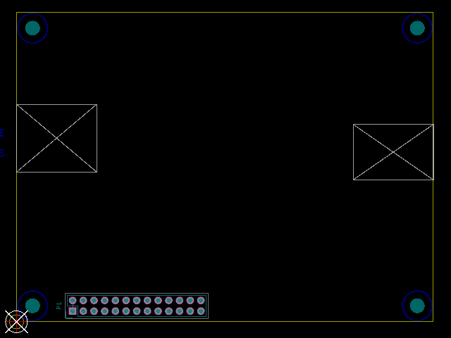

This project template is the basis of a low speed expansion board (lure) for the
Minnowboard MAX/Turbot.
This template includes a PCB edge defined according to the Minnowboard MAX or Turbot SBC
with the low speed connector and mounting holes placed correctly to align the two boards.
The board outline looks like the following:

NOTE: The outlines in the Dwgs.User layer denote areas that should not contain through-hole or
bottom side components to avoid connectors on the base board.
Copyright (c) 2016 Michael Welling